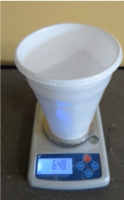
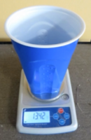
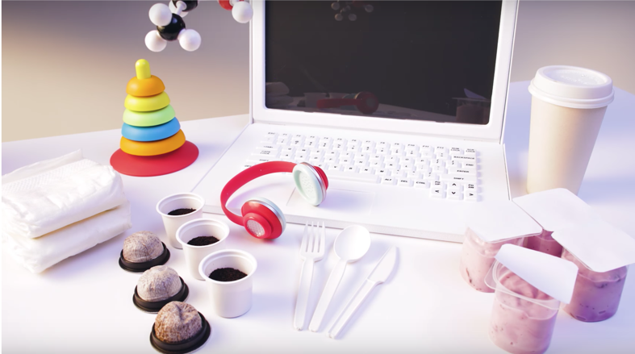

Step 3 Production manufacturing¶
Goal¶
To produce and manufacture products in a way that restores natural capital and utilizes life-friendly chemistry in order to protect workers and those who live around the production or manufacturing facility who may be exposed to chemicals and other emissions from production and manufacturing.
Introduction¶
All chemicals used in production and manufacturing have the potential for exposure to workers, neighboring communities, and the environment. Even chemicals not intentially added to a product, such as mold release agents or cleaning agents, may still end up in the product as residuals.
Strategies for meeting the goal require knowing the chemicals used and produced and understanding their inherent hazards and potential exposure pathways. Exposure levels do not need to be quantitatively measured in most cases. Rather, qualitative exposure assessment may be based on the presence of a chemical in a form that can be inhaled, ingested or absorbed through the skin.
Building a chemical inventory is an important step for knowing all of the chemicals involved in making your product. See Resource 1 - Chemical Inventory for guidance and suggestions. The chemical inventory will help you answer guiding questions in the next few steps as well. While identifying all of the chemicals involved can feel like a daunting task, even small amounts of hazardous chemical ingredient additives can greatly impact the sustainability attributes of a product. Additives to plastics and residual chemicals from manufacturing can: * Affect recycling, incineration, and value-recovery options * Be hazardous to workers, the environment, and users * Leak into the environment after disposal * Affect the quality of recycled materials and how they can be used in future products The more you know about what is in the material and what was used to create the material, the better you can identify areas for improvement. Gather as much information as possible now, and identify your data gaps where you are unsure of the chemicals used. Researching and filling in those data gaps is potentially an important action item, as is substituting out known hazardous chemicals.
Once you have built your chemical inventory, you can determine which chemicals are hazardous and may need to be substituted out. See Resource 2 - Chemical Hazard Assessment for guidance and suggestions on learning about the hazards of the chemicals in your inventory.
Restoring natural capital requires measuring the use of energy, water, materials used and the generation of waste in order to benchmark a product against other products or to guide efficiency improvements. Many of these are measured in a Life Cycle Assessment. See Resource 6 - Life Cycle Assessment for guidance and suggestions.
For a comprehensive sustainability assessment, manufacturing must consider economic, social, and environmental impacts. PrISM is founded on Product Assessment, Safety, and Sustainability (PASS) principles, which provide a vision that any sustainable product: * Supports a circular economy * Creates life-friendly chemistry * Restores natural capital * Supports a just and inclusive society
Consider Econony Society and Environment¶
Image Source: OECD Sustainable Manufacturing Toolkit
See Resource 4 - Stakeholder Considerations and Resource 5 - Social and Environmental Justic for guidance and suggestions on assessing economic, social, and environmental impact.
Examples¶
Grow Plastics developed a way to produce food packaging such as meat trays made from corn-based polylactic acid (PLA). These trays do not require any chemical additives, a big concern for some plastics and other packaging materials where the chemical additives can leach into food. Their PLA trays are made with a unique sandwich panel construction that achieves the desired performance properties but uses less material. Grow Plastics has found that their products produce only./4 the CO2 from materials manufacture compared to conventional plastics. Their lighter-weight biobased products are designed to reduce consumption of materials to preserve natural capital while providing a product with improved performance.
  